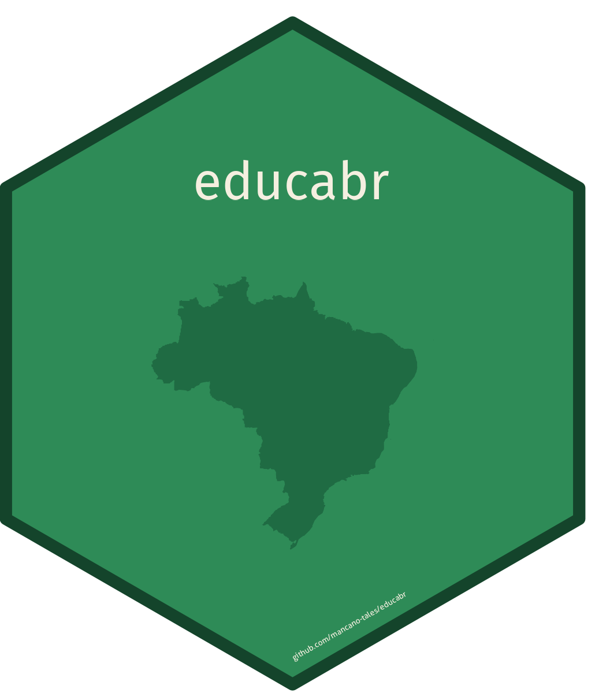
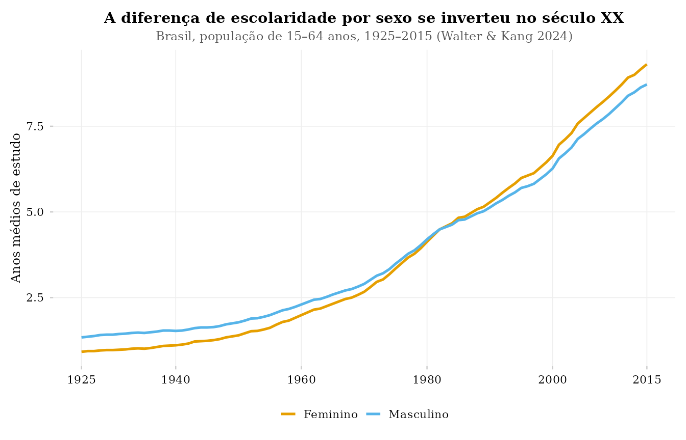
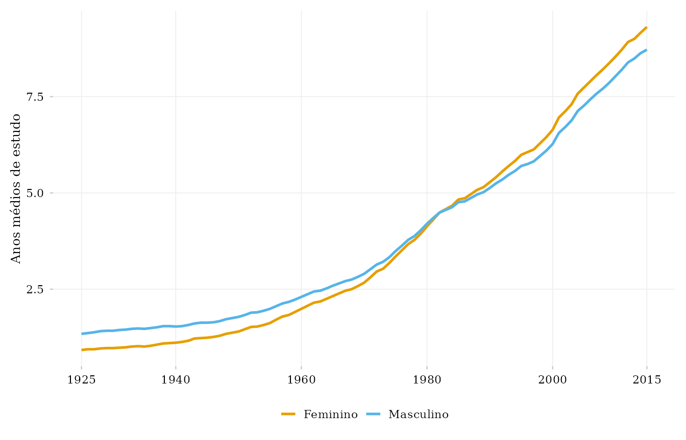
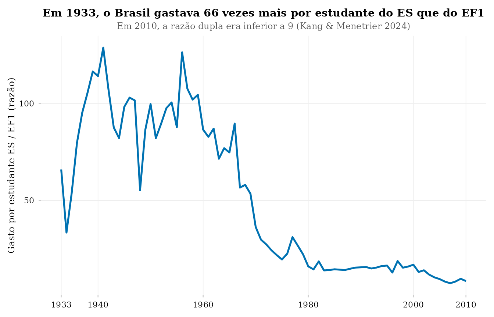

O sistema de visualização do educabr2 (PT-BR)
Source:vignettes/visualizacao-pt.Rmd
visualizacao-pt.RmdO educabr2 inclui componentes de visualização que
transformam uma consulta em figura pronta para publicação. O desenho
segue Data Visualization: A Practical Introduction, de Kieran
Healy: tema minimalista, paleta segura para daltonismo, rótulos precisos
e destaque para os dados.
Os três componentes
-
theme_educabr()— tema serifado baseado emggplot2::theme_minimal(), com linhas de grade discretas, legenda inferior e tamanhos de texto ajustados. Com TinyTeX,showtextesysfonts, registra automaticamente a fonte LaTeX Latin Modern Roman; sem essas dependências, usa a fonte serifada do sistema. -
scale_colour_educabr()/scale_fill_educabr()— escalas discretas com a paleta Okabe-Ito, segura para as três formas comuns de deficiência de visão de cores. -
scale_x_year_educabr(years)— eixo temporal para séries longas. Escolhe o espaçamento conforme a amplitude: 20 anos acima de seis décadas, 10 anos entre 25 e 60 anos epretty()para amplitudes menores. Rotula sempre o primeiro e o último ano e elimina marcas próximas que se sobreporiam a esses extremos.
Uma primeira figura
df <- get_schooling(geo_level = "BR", dimension = "sex", lang = "pt")
ggplot(df, aes(year, value, colour = dim_sex)) +
geom_line(linewidth = 0.9) +
scale_colour_educabr(name = NULL) +
scale_x_year_educabr(df$year) +
theme_educabr() +
labs(
x = NULL, y = "Anos médios de estudo",
title = "A diferença de escolaridade por sexo se inverteu no século XX",
subtitle = "Brasil, população de 15–64 anos, 1925–2015 (Walter & Kang 2024)"
)
Títulos dentro ou fora da figura: plot_titles
Para slides, blogs e painéis, o título costuma ficar dentro da imagem
(comportamento padrão). Para manuscritos LaTeX/Quarto, o título e a nota
de fonte podem ficar no documento.
theme_educabr(plot_titles = FALSE) remove título, subtítulo
e legenda de fonte da imagem, evitando duplicação:
ggplot(df, aes(year, value, colour = dim_sex)) +
geom_line(linewidth = 0.9) +
scale_colour_educabr(name = NULL) +
scale_x_year_educabr(df$year) +
theme_educabr(plot_titles = FALSE) +
labs(x = NULL, y = "Anos médios de estudo")
Esse é o procedimento usado nas figuras do artigo e apêndice do
educabr2: imagem limpa, com título e notas no
manuscrito.
Um exemplo de série secular
ratio <- get_expenditure(indicator = "double_ratio_es_ef1")
ggplot(ratio, aes(year, value)) +
geom_line(colour = "#0072B2", linewidth = 0.9) +
scale_x_year_educabr(ratio$year) +
theme_educabr() +
labs(
x = NULL, y = "Gasto por estudante ES / EF1 (razão)",
title = "Em 1933, o Brasil gastava 66 vezes mais por estudante do ES que do EF1",
subtitle = "Em 2010, a razão dupla era inferior a 9 (Kang & Menetrier 2024)"
)
Em 1933–2010, scale_x_year_educabr() espaça os rótulos e
marca os dois extremos, evitando aglomeração no eixo.
Referência da paleta
A paleta Okabe-Ito de scale_colour_educabr() /
scale_fill_educabr(), em ordem:
| # | Hex | Cor |
|---|---|---|
| 1 | #E69F00 |
laranja |
| 2 | #56B4E9 |
azul-celeste |
| 3 | #009E73 |
verde-azulado |
| 4 | #0072B2 |
azul |
| 5 | #D55E00 |
vermelhão |
| 6 | #CC79A7 |
roxo-avermelhado |
| 7 | #F0E442 |
amarelo |
| 8 | #000000 |
preto |
Acima de oito categorias, as escalas geram erro deliberadamente. Gráficos com mais de oito séries coloridas simultâneas raramente são legíveis; prefira facetas ou destaque poucas séries contra um fundo cinza.